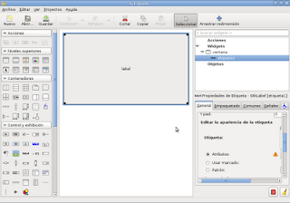
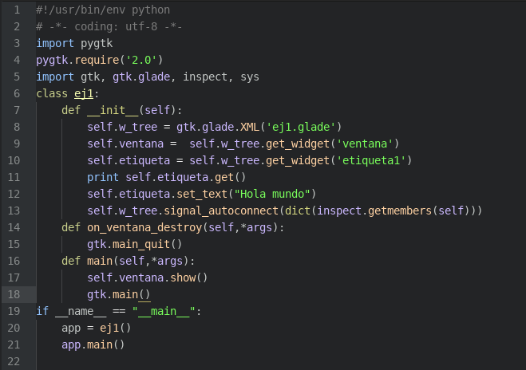

Desarrollo de aplicaciones gráficas con python+gtk+glade. Parte 1
Posted on Tue 16 June 2009 in Tutorial Python • 2 min read
Tengo guardado un material que he preparado para un curso de python con gtk y glade; desde hace algún tiempo he intentado dictar ese curso pero siempre había contratiempos así que mejor publico lo que tengo en el blog.
Empezare con hacer una simple interfaz que tenga información en una etiqueta.
En la figura se muestra la ventana creada y el widget etiqueta con el mensaje. La interfaz se guarda con extensión .glade el cual contiene un archivo XML.

El código del programa es el siguiente:

La primera línea define el interpretador de comandos a utilizar, en este caso python. La segunda línea define que se usará UTF-8 en el formato de texto. Las líneas 3,4 y 5 se importan módulos y se define el requerimiento de versión de gtk. Línea 6 se define la clase ej1. Línea 7 a la 13 se define el método init, que se ejecuta cuando el objeto se crea. Línea 8 se captura el archivo XML de glade. Línea 9 y 10 se capturan los widgets ventana y etiqueta1 tal como se llama en el archivo glade. Línea 11 se imprime lo que tiene la etiqueta1, se toma el valor con get(). Línea 12 se cambia el valor de lo que contiene la etiqueta1 con set_text("hola mundo"). Línea 13. Esta línea es la que relaciona los widgets con las señales y los métodos de la clase ej1. Línea 14. define el método on_ventana_destroy. Esté método se usa para cuando se le da clip a la ventana para cerrarla. Línea 15. Llama a la función quit de gtk. Línea 16. Define el método main. Línea 17.Muestra la ventana. Línea 18. Llama a main para la presentación de la ventana en pantalla. Línea 19. Si se ejecuta el script se ejecutará las siguientes líneas: Línea 20. Se crea el objeto. Línea 21. Se ejecuta el método main del objeto.
El resultado lo muestra la figura.

El código de la aplicación lo pueden descargar de github en el siguiente enlace.
===
¡Haz tu donativo! Si te gustó el artículo puedes realizar un donativo con Bitcoin (BTC) usando la billetera digital de tu preferencia a la siguiente dirección: 17MtNybhdkA9GV3UNS6BTwPcuhjXoPrSzV
O Escaneando el código QR desde billetera: